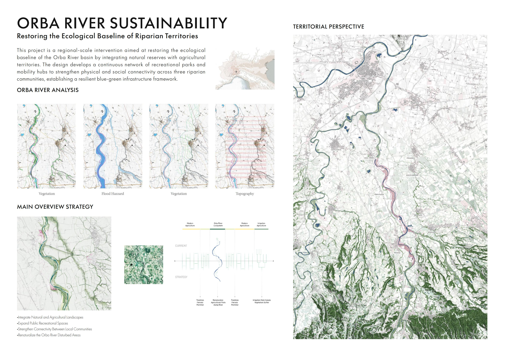
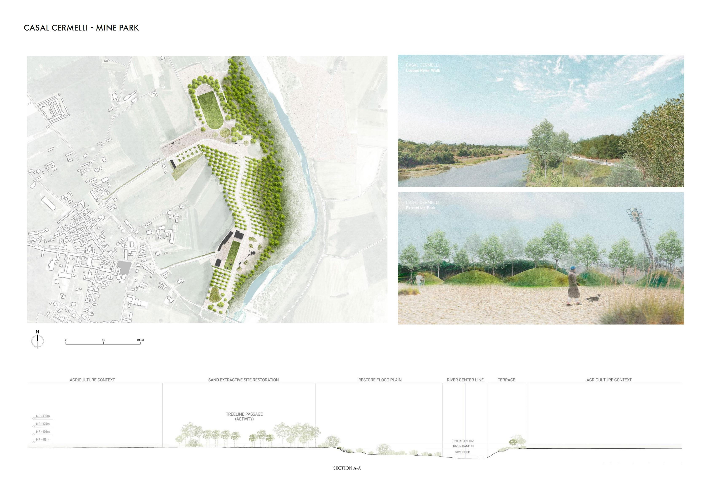
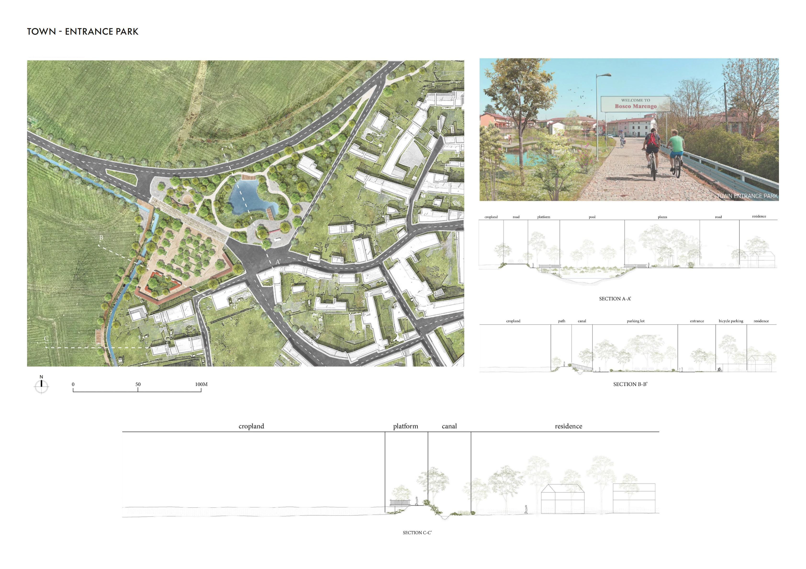
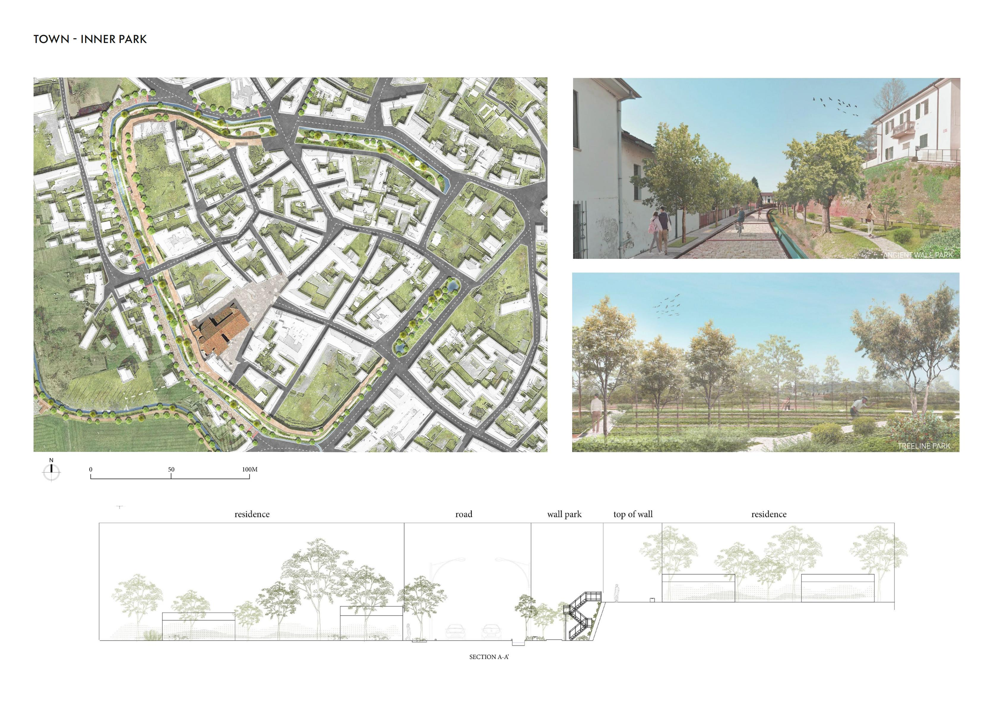
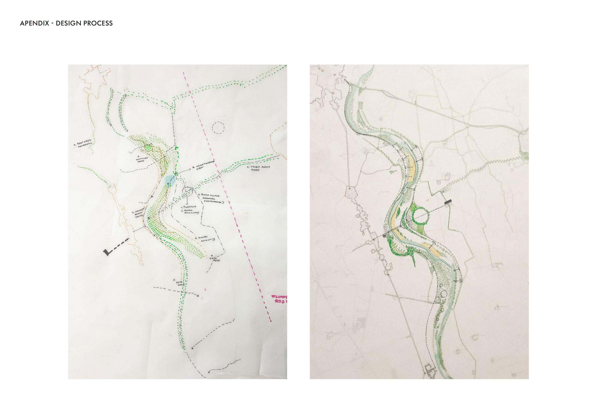

Orba River Basin, Province of Alessandria, Piedmont, Italy
Regional Landscape Planning / Ecological Restoration / Riparian Public Space Design
Local Residents / Riparian Communities / Visitors / Cyclists / Agricultural Communities
Academic Project / Concept
Orba River Sustainability is a regional landscape strategy for restoring the ecological baseline of the Orba River basin. Responding to fragmented habitats, flood vulnerability, agricultural pressure and disturbed extraction sites, the project establishes a continuous blue-green framework along the river corridor. Ecological restoration is combined with recreational spaces and slow-mobility connections, linking the river landscape with nearby communities. Three site-specific interventions translate the territorial strategy into local actions: the regeneration of a former mining area, a new entrance park and an inner-town green corridor.




